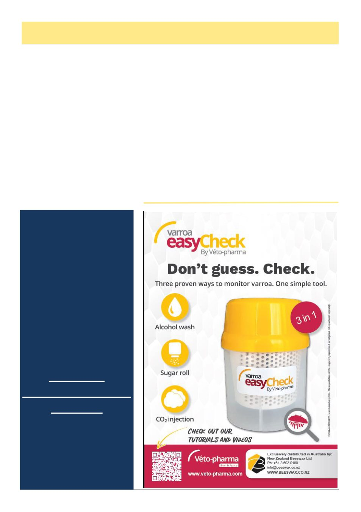

August 2026
17
A Journal, A Community, A Legacy
Celebrating Annette Engstrom
After more than two decades at the helm, Annette
Engstrom is retiring as Editor of the Australian Bee
Journal, and the Victorian Apiarists' Association fare-
wells one of its longest-serving workers.
Annette's annual reports to conference make one
thing clear: she liked the job, and it showed. Year after
year she wrote about the emails that arrived out of no-
where — a photo, a poem, a bit of artwork from a mem-
ber who "thought you might like it for the journal" —
and about members writing back just to say they'd en-
joyed that month's issue. It was a small, steady ex-
change, repeated for over twenty years.
Annette was never just assembling pages — she was
building a network. She chased down reports from the
Bendigo Branch and Melbourne Section, credited con-
tributors by name — John Kennedy, Jamie Trimby,
Peta Dawe, Rob Kerr, Tino Corsetti and many others —
and made room for first-time contributors alongside the
regulars. The journal became a point of connection
across the Association: hobbyists and veterans, north
and south, digital and print.
She also steered it through real disruption. When
COVID pushed the Association online overnight, An-
nette moved to digital-only distribution, arranged pho-
tocopies for members without internet access, and later
rebuilt the print run once it was viable again. Advertis-
ers and authors could rely on her throughout. More
recently, she dealt with the move to new software and
layouts to keep the ABJ workable for its readers.
Her layouts made room for everything each month
— branch reports, classifieds, a beginner's question, a
veteran's photo essay — without feeling cluttered. And
anyone who's ever missed a deadline knows the other
side of Annette: flexible about format, firm about tim-
ing, with a clear reminder that a late article might not
run for another six weeks.
Annette leaves the Australian Bee Journal as one of
the central sources of information for Victorian bee-
keepers, and a network of contributors and readers who
valued her work.
Editors may come
and go but the
Journal continues
regardless
Deadline for the next
journal is
Tuesday
1st of September
2026
Please note new
email address
Thanks for all your
past contributions.
Keep up the good
work for the new
Editor. Annette